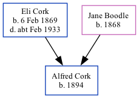

Alfred Cork 1894 -
[ Home ] | [ Calendar ] | [ Surnames Index ] | [ Family History ]A domestic gardener and the child of Eli Cork (a laborer on a farm) and Jane Boodle, Alfred Cork, the second cousin twice-removed on the mother's side of Nigel Horne, was born in Harbledown, Kent, England in 18941.
Throughout his life, he lived at Plough Row in Harbledown on Mar 31, 19011 and on Apr 2, 19112.
Parents
- Eli George was born on Feb 6, 1869
- Jane was born in 1868
Citations
- 1901 England, Wales & Scotland Census - Findmypast (was age 7 and the son of the head of the household)
- 1911 Census for England & Wales - Findmypast (was age 17 and the son of the head of the household)
Family Tree
Generated by Ged2Site. Last updated on Jul 20, 2025